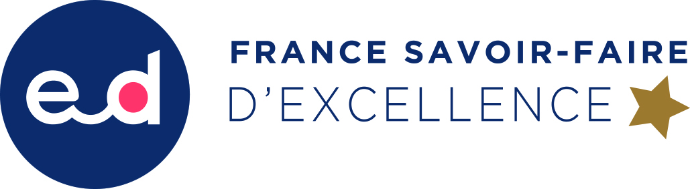

Pour l'organisation du moulin, l'année 2020 sera synonyme de cure de jouvence !
En effet, Léo, notre fils ainé, rejoint officiellement l’équipe.
Avec, en poche, un titre d’oléologue obtenu lors de la session 2019 du Diplôme Universitaire de Montpellier, la qualité de dégustateur officiel du Conseil Oléicole International et sa passion pour l’huile d’olive, il va apporter un vent de fraîcheur à notre équipe chic et choc !
Son jeune frère Quentin a été, cette année encore, le fer de lance de la production oléicole 2019 et maîtrise maintenant toutes les étapes, finesses et exigences qualitatives de la recherche d'excellence dans la production d'huile d'olive haut de gamme. Il est un maillon supplémentaire de ce renouveau.
Enfin, ce ne sont pas moins de 4 nouveaux jeunes collaborateurs supplémentaires en CDI qui rejoignent l'équipe, portant à 9 le nombre de permanents, sans compter les stagiaires et les emplois saisonniers qui nous soutiennent dans les périodes de grande activité pour accueillir les 20 000 visiteurs annuels qui franchissent nos portes.
Cette recherche permanente de qualité de l'accueil et de transmission de notre savoir-faire a conduit le Moulin Bastide du Laval a être nommé au classement des 100 sites remarquables du tourisme de savoir-faire au Quai d'Orsay à Paris et est fier d'arborer depuis fin septembre ce tout nouveau label "France Savoir-Faire d'Excellence".
